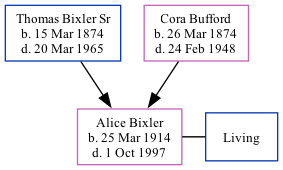

Alice Vesper Smith (née Bixler) 1914 - 1997
[ Home ] | [ Calendar ] | [ Surnames Index ] | [ Family History ]The 10th of 12 children of Thomas Bixler Sr (a farmer) and Cora BuffordAlice Bixler, the fourth cousin twice-removed on the mother's side of Nigel Horne, was born in Owen, Indiana, USA on Mar 25, 19141,2. She married Clovis Smith in Owen on May 25, 19332.
Throughout her life, she lived in Clay, Indiana on Feb 10, 19203; and in Spencer, Indiana in 1954 (the same place as her father had been living on Sep 12, 1918).
She died on Oct 1, 1997 in Bloomington, Monroe, Indiana, USA1.
Parents
- Thomas Isaac was born on Mar 15, 1874
- Cora Pearl was born on Mar 26, 1874
Citations
- Social Security Death Index - Findmypast
- United States Marriages - Findmypast
- US Census 1920 - Findmypast (was age 5 and the daughter of the head of the household)
Media
US Census 1920 - USC/1920/004965836/00459/041
Social Security Death Index - USBMD/SSDI/307388600
United States Marriages - FS/MAR/33742491/2
United States Marriages - R_327893783/2
United States Marriages - R_75587049/2
Family Tree
Generated by ged2site. Last updated on Nov 13, 2024